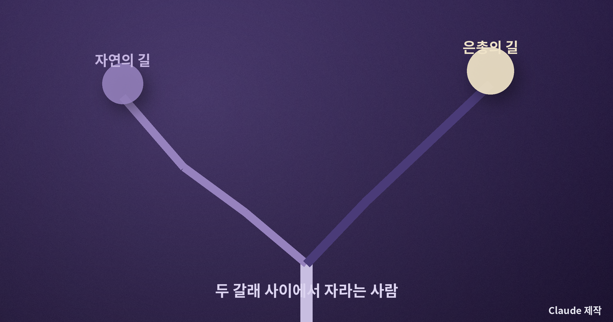
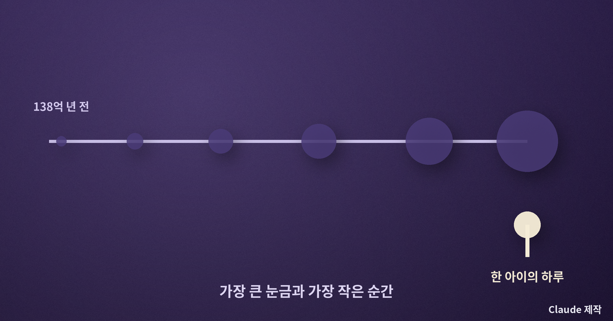
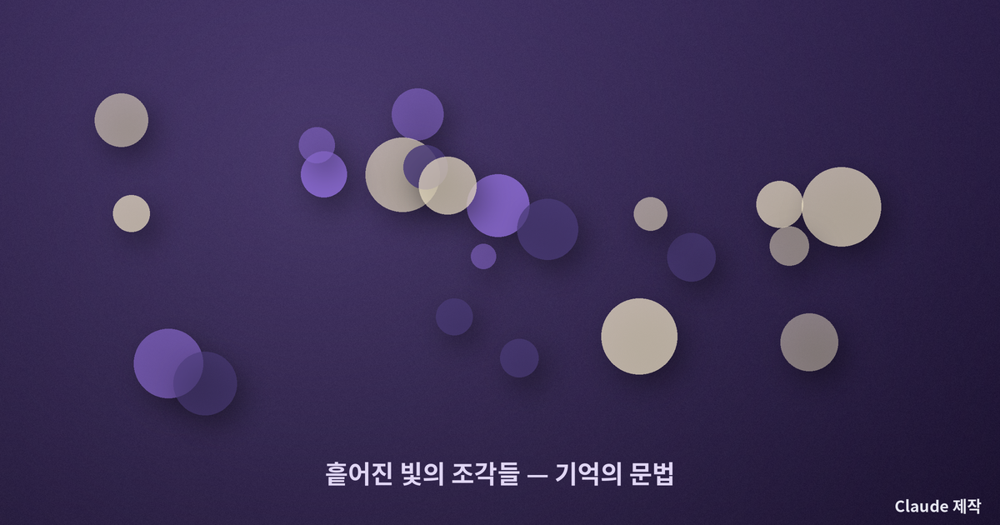
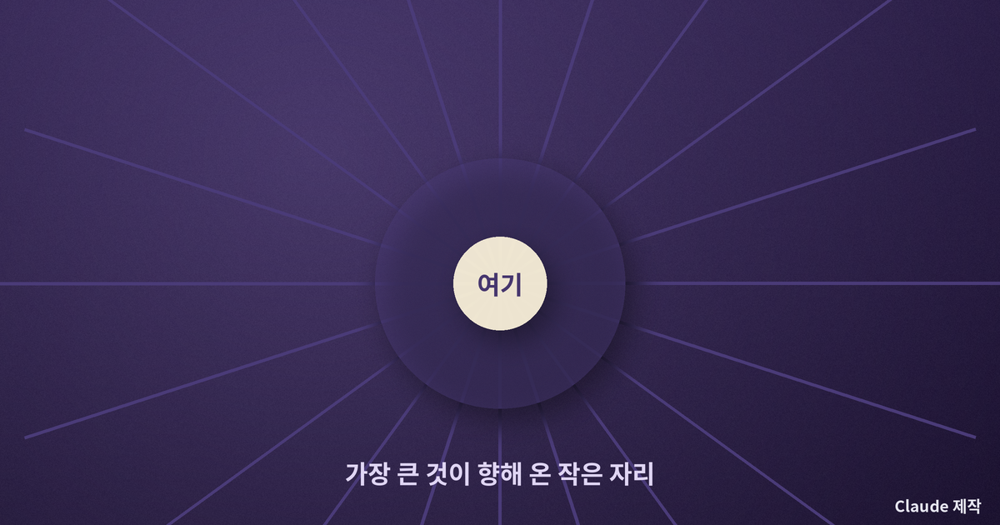

테렌스 맬릭 『트리 오브 라이프』 — 우주의 크기 앞에서 한 가정의 슬픔은 작아지는가
형의 부고를 받은 어느 아침
영화는 한 통의 부고로 시작한다. 중년이 된 남자가 오래전 세상을 떠난 동생을 떠올리고, 어머니는 아들의 죽음을 알리는 전보 앞에서 무너진다. 그런데 테렌스 맬릭은 이 사적인 슬픔을 곧바로 위로하지 않는다. 대신 카메라는 갑자기 우주의 탄생으로, 끓어오르는 용암과 성운, 바다에서 처음 헤엄치는 생명, 심지어 공룡의 시대로까지 거슬러 올라간다. 한 가정의 죽음에서 우주 전체의 역사로. 이 거대한 도약 앞에서 나는 처음엔 당황했고, 곧 이상한 위로를 느꼈다. 나는 『트리 오브 라이프』가 바로 그 도약의 의미를 묻는 영화라고 생각한다.
이 글은 아직 이 영화를 만나지 못한 이들을 위한 관람 전 사유다. 줄거리를 촘촘히 옮기기보다, 이 영화가 던지는 하나의 질문을 함께 들여다보고 싶다. 우주의 아득한 크기 앞에서, 한 사람의 슬픔은 정말 작아지는가.
자연의 길과 은총의 길
영화는 처음부터 두 가지 삶의 방식을 나란히 놓는다. 하나는 자연의 길이다. 강하고, 경쟁하고, 자기를 관철하며, 세상을 자기 뜻대로 굽히려는 태도. 아버지가 이 길을 대표한다. 그는 자식을 사랑하지만 규율과 성취로 사랑을 표현하고, 세상은 만만치 않으니 강해져야 한다고 가르친다. 다른 하나는 은총의 길이다. 받아들이고, 용서하고, 대가를 바라지 않고 베푸는 태도. 어머니가 이 길을 대표한다. 그녀는 햇빛과 나무와 아이들 사이를 거의 떠다니듯 움직인다.
맬릭은 어느 쪽이 옳다고 단정하지 않는다. 다만 한 소년이 이 두 길 사이에서 자라며, 아버지의 엄격함을 미워하면서도 닮아 가고, 어머니의 부드러움을 그리워하면서도 배신하는 과정을 오래 지켜본다. 나는 이 대목에서 자연과 은총이라는 오래된 신학적 구분을 떠올렸다. 인간은 자기를 지키려는 힘과, 자기를 내려놓는 힘 사이에서 평생 흔들리는 존재라는 통찰이다.

왜 우주까지 거슬러 올라가나
맬릭이 한 가정의 이야기에 우주의 탄생을 끼워 넣은 것은 과시가 아니다. 그것은 시간의 축을 바꾸는 장치다. 우리는 대개 자기 삶을 몇십 년의 눈금으로 잰다. 그 눈금 안에서 형의 죽음은 절대적인 상실이다. 그러나 카메라가 138억 년의 눈금을 펼치는 순간, 같은 죽음이 전혀 다른 자리에 놓인다. 작아지는 것이 아니라, 훨씬 큰 흐름의 일부로 다시 보이는 것이다.
여기서 오해하기 쉽다. 우주가 이렇게 크니 네 슬픔은 하찮다는 냉소로 읽으면, 이 영화를 정반대로 이해한 것이다. 맬릭이 말하려는 것은 그 반대다. 그 광대한 138억 년의 역사가, 오직 이 한 아이가 잔디밭에서 웃고 형과 다투고 어머니의 손을 잡기 위해 흘러왔다는 것. 가장 큰 것과 가장 작은 것을 한 화면에 담을 때, 작은 것은 하찮아지는 게 아니라 오히려 우주가 그것을 위해 존재했던 것처럼 귀해진다.

기억이라는 형식
이 영화가 줄거리를 또박또박 들려주지 않고 파편처럼 흩어진 장면들로 흘러가는 데에는 이유가 있다. 기억은 원래 그렇게 작동하기 때문이다. 우리는 유년을 시간 순서대로 기억하지 않는다. 커튼 사이로 들어오던 빛, 아버지의 구두 소리, 물을 뿌리며 뛰놀던 여름 오후 — 맥락 없이 떠오르는 감각의 조각들로 기억한다. 맬릭은 서사가 아니라 기억의 문법으로 영화를 짓는다. 그래서 이 영화는 이해하는 것이 아니라 통과하는 것에 가깝다.
나는 이 형식이 시간에 대한 하나의 태도라고 느낀다. 흘러가 버린 시간은 사라지는 것이 아니라 기억 속에 다른 방식으로 계속 존재한다는 것. 떠난 사람도, 지나간 여름도, 우리가 그것을 떠올리는 한 완전히 소멸하지는 않는다는 것. 죽음을 다루면서도 이 영화가 끝내 어둡지 않은 이유가 여기에 있다.

다시 나의 삶으로
영화를 보고 나면 이상하게도 창밖의 나무나 아이들의 웃음소리가 조금 다르게 들린다. 맬릭은 거대한 질문을 던지고는, 답 대신 일상의 사소한 빛으로 우리를 돌려보낸다. 자연의 길과 은총의 길 중 어느 쪽으로 살 것인가라는 물음은 스크린 밖에서도 매일 우리를 따라온다. 나는 대부분 자기를 지키려는 자연의 길 위에 서 있다. 그러나 가끔은 대가를 바라지 않고 손을 내미는 은총의 순간이, 138억 년의 시간이 향해 온 지점일지도 모른다는 생각을 한다.

우주의 크기 앞에서 한 가정의 슬픔은 작아지지 않는다. 오히려 그 크기가 작은 것을 더 또렷하게 비춘다. 나는 오늘, 늘 스쳐 지나던 창밖의 나무를 한 번 더 올려다보기로 한다. 그 사소한 응시가, 어쩌면 은총의 길로 내딛는 아주 작은 한 걸음일지도 모른다.